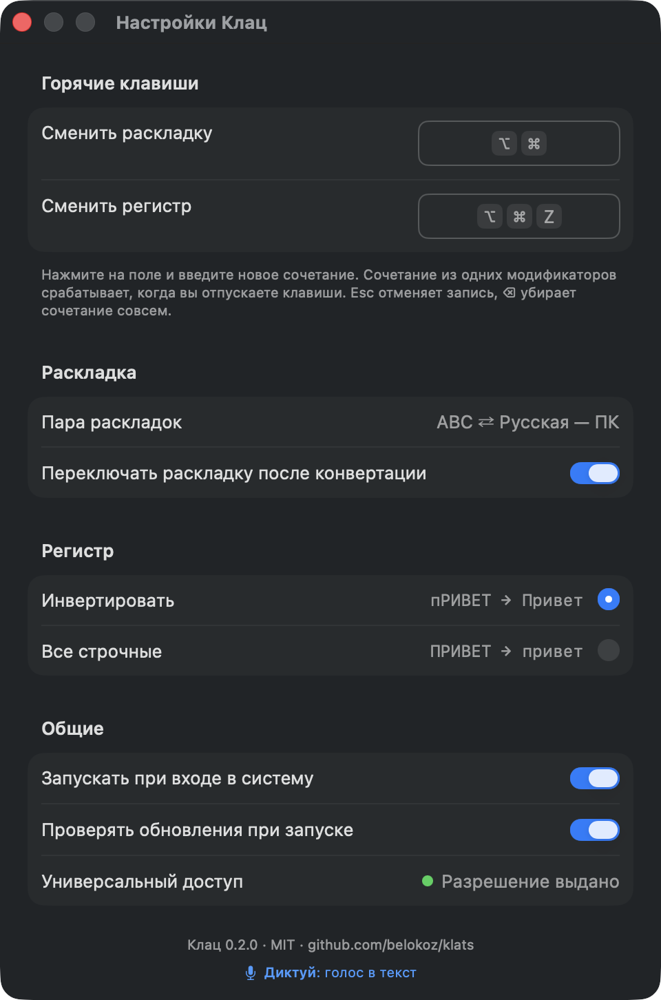
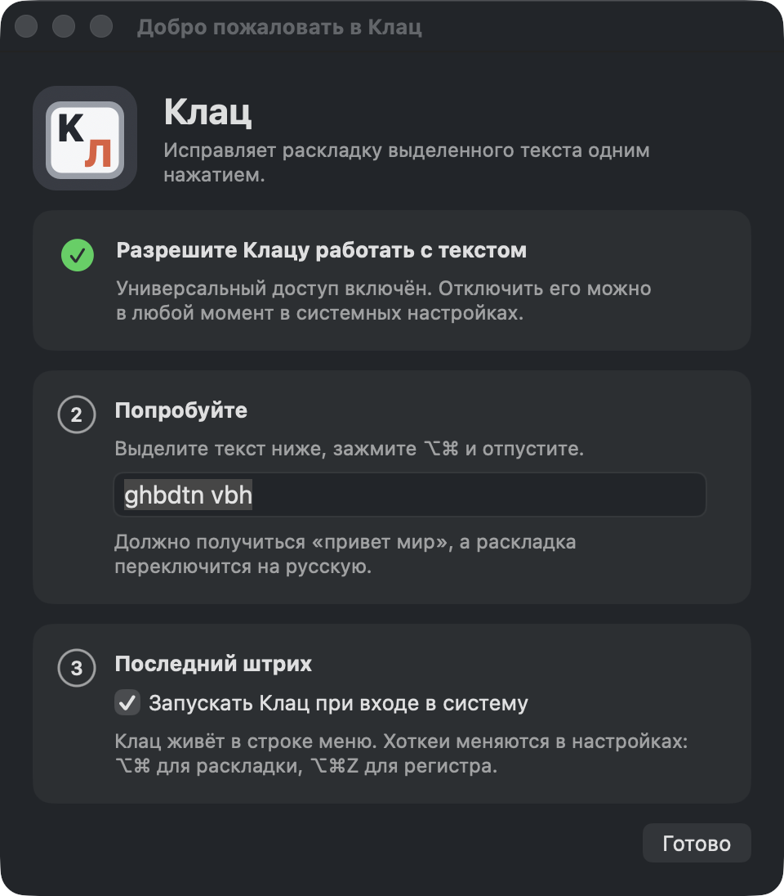

- 1⌘CКопирует выделенное.Перед этим запоминает, что лежало в буфере обмена.
- 2Перепечатывает.Каждую букву той же клавишей в другой раскладке.
- 3⌘VВставляет обратно.Обычная вставка: работает везде, где работает ⌘V.
- 4Переключает раскладку системы.На язык результата, чтобы дальше вы печатали уже правильно.
- 5Возвращает буфер обмена.Через 0,3 с. Что в нём лежало, там и лежит.
Выделил текст, отпустил ⌥⌘, раскладка сменилась.
Клац живёт в строке меню macOS и умеет одно: переводит выделенный текст в другую раскладку и переключает её в системе. Бонусом ⌥⌘Z меняет регистр. Без автозамен и словарей, ваш текст Клац никуда не отправляет.
Klats-0.2.0.dmg, 1,0 МБ · macOS 12+, Apple Silicon и Intel · бесплатно, MIT
Попробуйте прямо здесь
Раскладка системы: ABC
Одно нажатие
Клац не следит за тем, что вы печатаете. Он просыпается, когда вы отпускаете ⌥⌘, и делает то, что вы сделали бы руками, только за 0,4 секунды.
Поэтому Клац работает везде, где работают ⌘C и ⌘V, и не работает там, где они не работают. Ваш текст Клац никуда не отправляет: в сеть он выходит только раз при запуске, чтобы узнать номер последней версии.
Одна клавиша, две буквы
На русской клавиатуре у каждой клавиши две легенды: латинская и кириллическая. «ghbdtn» и «привет» — одни и те же шесть клавиш. Клац ничего не переводит и не угадывает: он смотрит, какой клавишей набрана буква, и берёт с той же клавиши букву из другой раскладки.
Наведите на клавишу или нажмите её на своей клавиатуре.
Таблицу «буква ⇄ клавиша» Клац не хранит в коде: он строит её из раскладок, включённых в вашей системе, за 0,2 мс. Поэтому работает любая пара раскладок, не только русская с английской, и Shift учитывается сам. Так же выглядит и иконка Клаца: клавиша K с русской Л, читается «Кл».
Ничего лишнего. И ничего наружу.
Punto Switcher купил Яндекс и перестал развивать, а сам он комбайн. Клац — одно действие без комбайна.
Чего нет
- автопереключения по мере набора
- автозамен и словарей
- статистики и звуков
- аккаунта и подписки
- отправки вашего текста
≈2 МБприложение целиком
≈10 МБпамяти в покое
0 %процессора в покое
0зависимостей
Клац не отправляет ваш текст никуда. В сеть он выходит один раз при запуске: спрашивает у GitHub номер последней версии и, если вышла новая, предлагает её скачать. Это выключается в настройках. Журнал в ~/Library/Logs хранит только приложение, время, длины и исход, текста там нет никогда. Исходники открыты, проверьте сами.

Ставится за минуту
- 1
Скачайте Klats-0.2.0.dmg, откройте образ и перетащите Клац в «Программы».
- 2
Откройте Клац. Сразу macOS его не запустит: она не может проверить разработчика. Запуск нужно один раз подтвердить, после установки и после каждого обновления.
macOS 15 и новее. Дважды щёлкните по Клацу в «Программах» и в окне нажмите «Готово» (не «Переместить в Корзину»). Откройте «Системные настройки» (меню с яблоком в левом верхнем углу экрана) → «Конфиденциальность и безопасность», прокрутите вниз до раздела «Безопасность» и нажмите «Все равно открыть». Введите пароль от Mac и нажмите «Открыть».
macOS 12–14. В «Программах» нажмите на Клац правой кнопкой мыши (или щёлкните, зажав Control) и выберите «Открыть». В окне ещё раз нажмите «Открыть».
Не получилось? Нет кнопки «Открыть» или появилось окно «Не удается открыть программу «Клац».». Так бывает, особенно если DMG прислали через мессенджер. Снимите с Клаца отметку «скачано из интернета», это две минуты:
- Откройте Терминал: Finder → «Программы» → папка «Утилиты» → «Терминал». Или нажмите ⌘ и Пробел, наберите «Терминал» и нажмите Return.
- Скопируйте эту строку:
xattr -dr com.apple.quarantine /Applications/Клац.app - Щёлкните в окне Терминала, вставьте строку (⌘V) и нажмите Return. Если Терминал ничего не ответил, всё получилось.
- Закройте Терминал и откройте Клац двойным щелчком.
Команда меняет только Клац. Если Терминал ответил «Permission denied», вставьте ту же строку с
sudoи пробелом в начале и введите пароль от Mac: при вводе он не виден, это нормально. - 3
Клац попросит «Универсальный доступ». Это единственное разрешение, и нужно оно для двух вещей: чтобы Клац видел, когда вы отпускаете ⌥⌘, и чтобы нажать за вас ⌘C и ⌘V. Включите Клац в списке, вернитесь в окно первого запуска и попробуйте на тестовом поле.

Интерфейс на русском и английском, язык берётся из системы.
Собрать самому
Xcode не нужен, достаточно Command Line Tools. Тесты ядра тоже идут без Xcode.
Нужен Swift 6, то есть Command Line Tools 16 и новее, а они ставятся только на macOS 14.5 и новее. На macOS 12 и 13 берите готовый DMG, он универсальный.
git clone https://github.com/belokoz/klats.git && cd klats && ./scripts/install.shЧто стоит знать
- Ошиблись или передумали: ⌘Z отменяет замену, как обычную вставку.
- Терминалы, удалённые рабочие столы и игры не поддерживаются: там ⌘C и ⌘V работают иначе. В полях паролей Клац ничего не делает.
- Вставляется простой текст, форматирование берётся у окружения.
- Японский, китайский и корейский ввод в пары не входят.
- Отпустили ⌥⌘, ничего не выделив? В обычных приложениях услышите «бип». В VS Code и похожих редакторах рядом появится сконвертированная копия всей строки.
Это замена Punto Switcher?
Для одной его функции: исправить уже набранное. Автопереключения по мере набора нет: оно угадывает и ошибается в паролях, логинах и коде. Клац делает ровно то, что вы попросили, и только когда попросили.
⌥⌘ не сломает ⌥⌘Esc, ⌥⌘D и перетаскивание?
Нет. Клац срабатывает, только если вы отпустили ⌥⌘, не нажав между делом ни клавиши, ни кнопки мыши, и держали меньше секунды. Всё остальное работает как раньше. Сочетание меняется в настройках, в том числе на другое из одних модификаторов.
Бесплатно? Что потом?
MIT, без подписки, без аккаунта, без «про»-версии. Удалить так же просто: «Завершить Клац» в меню и перетащить в корзину. На macOS 12 сначала выключите автозапуск в настройках, иначе в ~/Library/LaunchAgents останется файл io.github.belokoz.klats.login.plist.
Сделан за три дня
Клац написан 16–18 сентября 2026 в диалоге с Claude Code. Автор ставил задачи, смотрел результат каждого этапа и правил; код и документы писал Claude. История с датами, развилками и цифрами — в репозитории.
Дальше: версия 1.1 с историей буфера обмена по ⌃V.
Версия для Windows
В ближайшее время планируем сделать Клац для Windows: та же одна функция. Выделил текст, нажал сочетание, раскладка сменилась. Без комбайна и без словарей.
Как только сборка будет готова, она появится на GitHub и на этой странице.